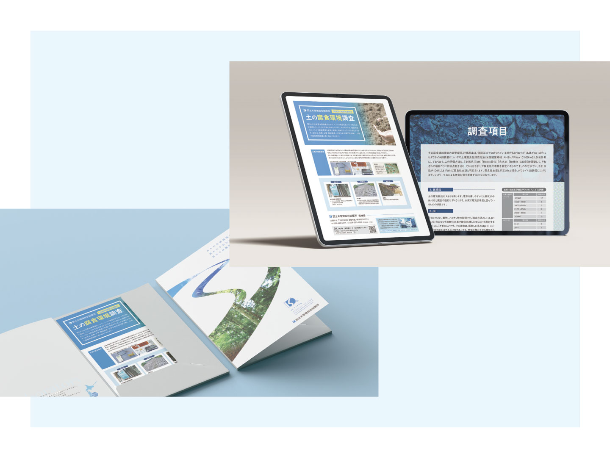

【実務実績】「土質調査」案内チラシ（全48件）のデザイン刷新

既存の営業用案内チラシの刷新。デザインを統一することで、社内統制が取れている企業としてのイメージをつけ、企業ブランディングをサポート。またデザインを見直すことで、内容もブラッシュアップされ、より的確に情報を伝えている。他の業務と並行して、優先順位の高いものから順次刷新。
株式会社土木管理総合試験所／土の腐食環境調査／2022.7.11
目的
企業ブランディングの一環としてのデザイン統一
ターゲット
35〜40歳／男性
デザインコンセプト
コーポレートカラーを基準に配色し、フォント・余白のサイズ・あしらいを揃え、写真やグラフィックへ目線がいくレイアウトを意識。営業の経験値に左右されない情報提供ができるチラシを目指した。
担当
企画／デザイン／デザイン指導
期間
| 関係部門へのヒアリング | ：1時間 |
|---|---|
| 原稿の作成や修正 | ：2〜7日（▲） |
| デザイン制作（初校〜3校） | ：5〜8時間 |
| 校正 | ：1時間〜7日（▲） |
| 納期 | ：1時間 |
▲＝担当してない部分。
成果・工夫
- 情報システム部と協力し、デザイン制作依頼の窓口を設置。チラシやその他のプロモーションを新しく作成する場合も、統制できる環境を整えた。
- 他の業務と並行して月2件程のスピード感で刷新を行う。2023年5月から、主担当を新卒に引き継ぎ、デザイン指導を行う。